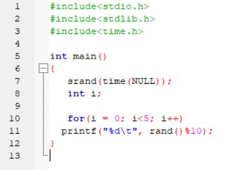

This website contains the information on how to refine from 0 to S.
I will also share my trick on refining B-S with my full research on how I came up with that trick.
Refining 0-B
In refining 0-B you'll need a full Tech character to have the maximum success rate and maxed the level of all refining skills, the cheapest way to refine is by:
1.) Using Mithril Ore from 0-E;
2.) Then Mithril Ore with Anti-Degradation for E-C;
3.) Next refine to C-B using Orichalcum and Anti-Degradation.
Mithril Ore can be farmed at Ultimea: Southeast, the Underground Nemicos are the mob for the drop.
Orichalcums can be bought at General Stores for 16,000 spina per piece quite pricey.
Q: Isn't it more cheaper if I refine with Orichalcum from D-B instead of Mithril Ore?
A: It is not, the Orichalcum might do higher success rate starting from D-B.
But 1 refine of Orichalcum with Anti-Degradation is almost the same as refining 5 Mithril Ore with Anti-Degradation.
The stakes of refining with Mithril Ore with Anti-Degradation is more favorable cause it is also likely for Orichalcum to fail
even though the success rate is higher. It is better to fail in refining with Mithril Ores, than with Orichalcums.
Up
Refining B-S
In refining B-S your character must have full luck 255, and you only need Lv 1 Refiner Skill.
You can use different refining materials since the success rate is always the same ranging from hematite ore to orichalcum.
I recommend using mithril ore with anti-degradation throughout the whole process of refining, cause it is currently the cheapest and the easiest refining material to farm.
There are a few things that are important to know.
1.) Weapon must be non-slotted
Q: Is it possible to refine 1 Slotted and 2 Slotted weapons from B-S?
A: Yes it is possible, the degradation chances are the same for whatever weapons, but the rank of degradation is different
Non-slotted weapons can only degrade with a maximum of 1 rank. (ex. from 3 to 2)
1 Slotted weapons can degrade with a maximum of 2 ranks. (ex. from 3 to 1)
2 Slotted weapons can degrade with a maximum of 3 ranks. (ex. from 3 to 0)
It would be annoying to refine higher slotted weapons and might cost you more than you think.
Estimatedly, you might end up spending 7M spina for +S 1 slotted, and 10M spina for +S 2 slotted, or worst more than that.
It would be mathematically cheaper to just start refining from non-slotted, then buy piercers from players.
2.) Luck doesn't increase success rate
Luck increases the anti-degradation rate by a lot and not the success rate. It is said that with the use of Anti-Degradation(75%), the rate with pure luck character will rise up to 99%
3.) 99% is not 100%
Even though anti-degradation rate is 99%, degradation will still happen more often than successul +S refine. I've read that the success rate for +A and +S are both 0.001%
which means that it's normal to have more degradation than success.
Up
The Battle Between You and RNG (My trick to Refining B-S)
What is RNG(Random Number Generator)?
RNG is a random number that is made to be used to dictate the outcome of a certain situation.
in example, if the range of RNG is from 0 to 9, and you have 60% success rate. The developer could assign numbers 0 to 5(6 numbers) as your success outcome, and 6 to 9 (4 numbers) as your fail outcome.
If the input number gave an outcome of 4, then your situation is a success. But if its 8, then your situation is a failure.
Is RNG really random?
For MMORPG and other games. The answer is a big "NO". The RNG program used in games is called "PRNG" (Psuedo-Random Number Generator)
PRNGs are formulas made to copy the scenario of being random, they're not totally random at all.
If its not random, can we control it in our favor?
The answer is a big "YES" we can. I've looked into several PRNG Codes and tried it myself using the simple C++ code I got as an example.

So what does this sample code do? It simply randomize time with the formula inside the "srand()" function.
Yes, "TIME", time is the key to control the PRNG.
Formula Analysis
Look at the formula "rand()%10", the "%" sign means "modulo" in different programming language, meaning it will only get the "remainder" as its "answer".
Doing "%10" gives results 0 to 9 since any number divided by 10 will have those remainders.
(ex. if the random number is 64, then 4 is the answer cause 64/10 will give a remainder of 4)
So how can we do it?
The answer is by refining using prime numbers that will end up in different "ones" digit as your interval in seconds. The numbers are 3, 7, 9, and 13.
3 seconds is too fast, and it may result in insignificantly close result that may cause consecutive failure to refine.
Experimentation and Conclusion
I'm still currently on the way of making the cheapest trick to refining +S. Currently on test 5 with it, and below are the results of Test 1 to 4
The lucky magic number is 7
7 second intervals gives 7,14,21,28,35... which leads to 7,4,1,8,5 when used with "%10", randomness is the main key to have a successful refine.
Test 1
I used up 2 stacks of Anti-Degradation for B-S, it was an easy refine. I have an average of 7 stacks in one +S weapon before. The first test result really made me happy.
Test 2
Using the same 7 second interval per refine method. I ended up using 6 stacks of Anti-Degradation, 4 stacks before I sleep, 2 stacks after I woke up. It was a bad result to be honest.
Test 3
With the same method, I only used 2 stacks of Anti-Degradation again. But this time I only used 1 stack first, then after 4 hours, I succeeded with the other stack. This led me to a conclusion that;
The Hour clock is also a part of RNG, and impacts the results harshly.
Test 4
I used 1 stack of Anti-Degradation only :3, cause I refined the same hour that Test 3 succeeded.
Test 5
I used around 60+ pieces of Anti-Degradation at first, I ended up at +A refine. I decided to just buy another stack, and end up successfully after 50 tries.
Test 6
I ended up using 4 stacks of Anti-Degradation on September 12,2020 this led me to the conclusion;
The "DATE" is also a part of RNG, and impacts the results harshly.
so after a day, I only used 1 stack of Anti-Degradation and I did +S successfully.
Test 7
Works well, I ended up using 3 stacks of Anti-Degradation. It was a good refine. :3
Test 8 Commencing
The Trick (Unofficial)
The trick for refining B-S is:
1.) Refine in 7 seconds interval;
2.) Only use 1 stack of Anti-Degradation per session of refining;
3.) The interval of each sessions must be 2-4 hours;
4.) Patience is the key. Time is gold, and more time will give you more gold... YUMM :3
5.) If you used 3 stacks or more of Anti-Degradation, consider refining in the next day.
Dumping Myths
1.) Place of refine doesn't matter there is no need to change places, you only need a place that is not laggy :3. You can do it in a laggy place but thats pretty annoying, results will still be the same.
2.) Refining with different refine materials doesn't matter. As a programmer, assigning different values in different refining materials is not really significant when refining B-S.
Up